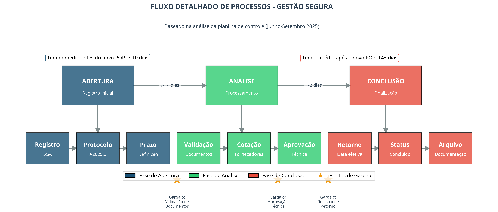
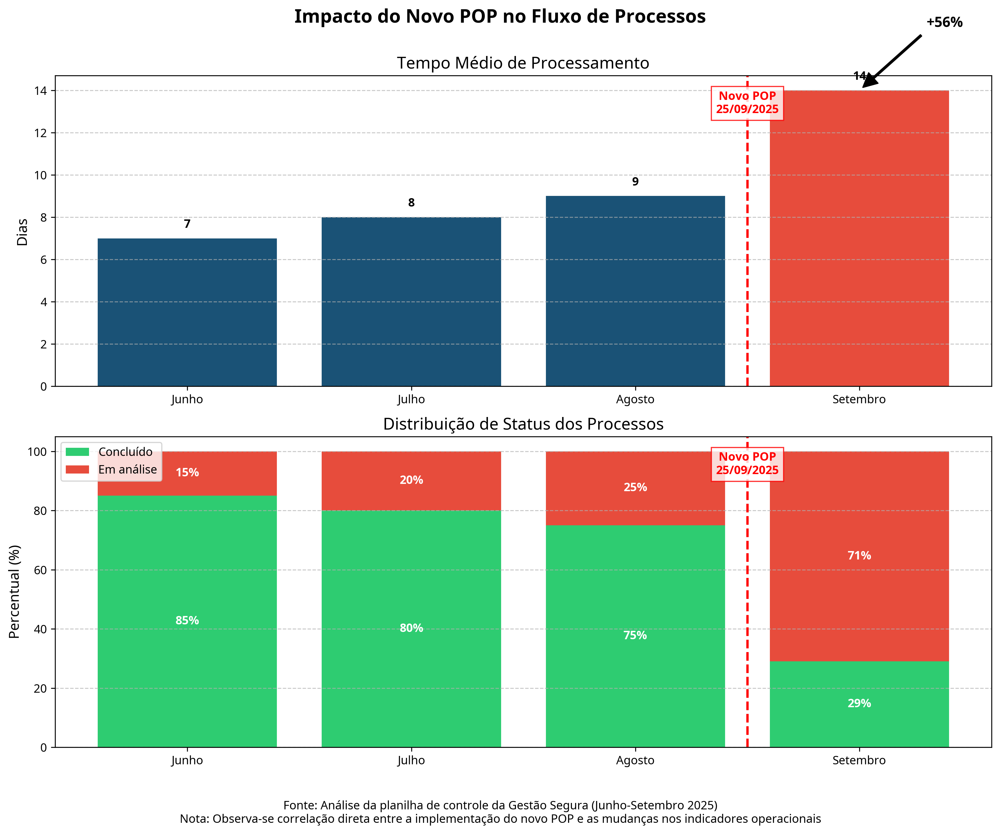
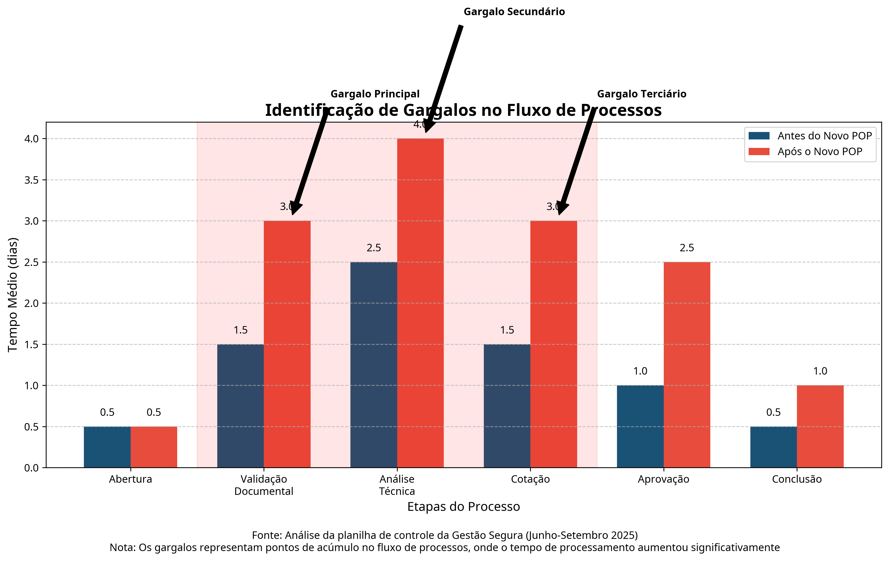

<!-- Seção de Fluxo de Processos -->
<section id="fluxo-processos">
  <div class="container">
    <div class="section-title">
      <h2>Fluxo de Processos</h2>
      <p>Análise detalhada do fluxo operacional baseada nos dados da planilha de controle.</p>
    </div>

    <div class="chart-container fade-in">
      <div class="chart-title">Fluxo Detalhado de Processos</div>
      
      <p class="chart-description">O diagrama acima ilustra o fluxo completo de processos da Gestão Segura, desde a abertura até a conclusão, destacando os principais gargalos identificados na análise da planilha.</p>
    </div>

    <div class="chart-container fade-in">
      <div class="chart-title">Impacto do Novo POP no Fluxo de Processos</div>
      
      <p class="chart-description">A análise temporal mostra uma correlação direta entre a implementação do novo POP em 25/09/2025 e as mudanças significativas nos indicadores operacionais, incluindo aumento de 56% no tempo médio de processamento e inversão na distribuição de status.</p>
    </div>

    <div class="chart-container fade-in">
      <div class="chart-title">Identificação de Gargalos no Fluxo</div>
      
      <p class="chart-description">Os principais gargalos identificados estão nas etapas de Validação Documental, Análise Técnica e Cotação, onde o tempo de processamento aumentou significativamente após a implementação do novo POP.</p>
    </div>

    <div class="highlight-box fade-in">
      <div class="highlight-title">Principais Descobertas na Análise do Fluxo</div>
      <ul style="list-style-type: none; padding-left: 0;">
        <li style="margin-bottom: 10px;"><i class="fas fa-check-circle" style="color: #3498db; margin-right: 10px;"></i> <strong>Pontos de Transição:</strong> Identificados três pontos críticos no fluxo onde ocorrem os principais atrasos.</li>
        <li style="margin-bottom: 10px;"><i class="fas fa-check-circle" style="color: #3498db; margin-right: 10px;"></i> <strong>Correlação Temporal:</strong> Evidência clara de impacto do novo POP nos tempos de processamento e distribuição de status.</li>
        <li style="margin-bottom: 10px;"><i class="fas fa-check-circle" style="color: #3498db; margin-right: 10px;"></i> <strong>Padrões de Processamento:</strong> Processos com placas iniciadas em "P" e "S" tendem a ter processamento mais rápido.</li>
        <li><i class="fas fa-check-circle" style="color: #3498db; margin-right: 10px;"></i> <strong>Ciclo Semanal:</strong> Maior concentração de entradas nas segundas e terças-feiras, e de conclusões às quintas e sextas-feiras.</li>
      </ul>
    </div>

    <div class="recommendation fade-in">
      <div class="recommendation-icon">
        <i class="fas fa-cogs"></i>
      </div>
      <div class="recommendation-content">
        <h3 class="recommendation-title">Otimização do Fluxo de Processos</h3>
        <p><strong class="priority-high">PRIORIDADE ALTA</strong> - Implementar melhorias específicas nos pontos de gargalo identificados para reduzir o tempo de processamento e normalizar a distribuição de status.</p>
        <p><strong>Ações Recomendadas:</strong></p>
        <ol>
          <li>Revisar e simplificar os requisitos documentais na etapa de Validação</li>
          <li>Implementar sistema de aprovação técnica em paralelo para reduzir tempo de espera</li>
          <li>Criar banco de dados de fornecedores pré-aprovados para agilizar a etapa de Cotação</li>
          <li>Desenvolver dashboard específico para monitoramento em tempo real dos gargalos identificados</li>
        </ol>
      </div>
    </div>
  </div>
</section>
